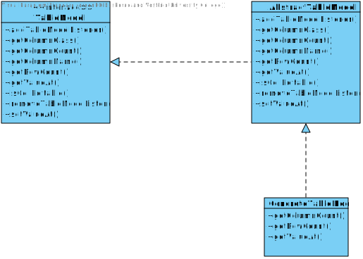
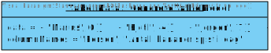

Enkel forklaring av AbstractTableModel
Introduksjon
AbstractTableModel er en “klasse” som vi definerer som "abstrakt". Før vi kan forstå hva vi mener med at at den er “abstrakt”, så må vi forstå hensikten bak TableModel “klassen” og hvorfor den er klassifisert som et "interface". Vi skal også definere en “klasse”.

Kort om klasser
Med en grunnleggende forståelse av hva en klasse er, så er det ikke veldig vanskelig å forstå oppgaven til en interface. En klasse pleier veldig ofte å samarbeide med andre klasser for å kjøre et fullstendig program. Om programmet utnytter en eller ti klasser kommer helt an på hva oppgaven til programmet er.I mindre programmer der man benytter seg av bare en klasse, så vil den klassen alene ha en klar hensikt i form av å fullføre et spesifikt arbeid og produsere et resultat. Litt mer avanserte programmer har kanskje to klasser som samarbeider, der den ene behandler informasjon mens den andre presenterer det. I dette tilfellet så har begge klassene en klar funksjon og begge har mulighet for å bli "instansiert".
Hva mener vi med instansiering?
Instansiering av klasser er når klassen blir oppkalt, eller startet, for å utføre jobben den har blitt programmert til å gjøre. Eksempler i den virkelige verdenen kan for eksempel være at du "instansierer" datamaskinen når du skrur den på, eller at du "instansierer" vaskemaskinen. I de fleste tilfeller, så må en klasse instansieres for å bli brukt. Merk at det er tilfeller der klasser kan brukes uten å instansieres, som for eksempel interface-klassen vår.Hva er et interface?
Hvis du har forstått at instansiering er når klassens programkode blir kjørt, så kan vi gå over og se på en annen klassetype som heter "interface". Et interface er ganske lik en vanlig klasse, bare at hensikten er ikke å være en "kjørbar" klasse som produserer et resultat. Interface kan nemlig ikke bli instansiert i det hele tatt. Hensikten til et interface er å være en retningslinje for andre klasser.
Abstraksjon
Fordi yrke metoden er abstrakt, så vil hele "Person" klassen også være abstrakt. Det vi gjør da er at vi lager nye klasser for personene vi ønsker å lage, "Gunnar", "Per" og "Hilde" som oppfører seg som subklasser for "Person". De tre personene vi nå har opprettet inneholder allerede metodene for å sove, spise mat, drikke vann osv. Men I tillegg til disse metodene som er arvet fra superklassen, så har hver av klassene sin egen definisjon på "yrke" metoden. Det betyr at Gunnar kan definere sin yrke metode til å være snekker, mens Per kan definere sin yrke som lærer. Grunnen til at vi bruker et interface sammen med en abstrakt klasse er for å slippe å måtte redefinere alle de grunnleggende metodene vi vet alle personene skal ha. Arving er et sterkt verktøy for utviklere og dette er et godt eksempel på hvorfor.Ønsker vi å legge til en ny person kalt "Hege" så trenger vi bare å definere yrket hennes. "Person" inneholder ingen definisjoner for sine egne metoder, den bare sier at disse metodene skal eksistere, men ikke hvordan de fungerer. Hvis Klasse 1 har en abstrakt metode, altså en metode som ikke er definert, bare nevnt, så vil Klasse 1 bli abstrakt og den er avhengig av at Klasse 2 (som har valgt å bruke Klasse 1) implementerer Klasse 1 og fullfører disse tomme metodene. Hvis du har forstått deg litt på instansiering, interface og abstraksjon så kan vi gå over til å sette deg inn i AbstractTableModel. Det er viktig å nevne at AbstractTableModel og TableModel er 2 helt forskjellige ting.
Hva er forholdet mellom TableModel og AbstractTableModel?
TableModel er et interface. Som du kan se i klassediagrammet, så har den flere metoder som f.eks "addTableModelListener" og "getColumnCount". Ingen av disse metodene er definert og TableModel er derfor en klasse som ikke kan instansieres. For å få nytte ut av TableModel, så lager vi en ny klasse som kalles for AbstractTableModel. Denne klassen implementerer TableModel og må dermed definere alle metodene for å kunne bli en gyldig, instansierbar klasse. Klassediagrammet viser at AbstractTableModel definerer alle funksjonene utenom 3. "getColumnCount", "getRowCount" og "getValueAt" metodene er fortsatt udefinert og derfor abstrakte. Disse abstrakte metodene gjør hele klassen abstrakt, som betyr at AbstractTableModel ikke er en fullført klasse.Hvordan bruker vi AbstractTableModel i et program?
For at vi skal få brukt TableModel og AbstractTableModel så må vi ha en instansierbar klasse. Derfor lager vi en tredje klasse vi kaller for "ConcreteTableModel". ConcreteTableModel arver fra AbstractTableModel, som betyr at ConcreteTableModel inneholder alle metodene som AbstractTableModel har, inkludert de 3 abstrakte, ikke-definerte metodene. I ConcreteTableModel så gir vi endelig definisjoner på disse 3 metodene, som gir oss en insansierbar klasse vi kan benytte oss av. ConcreteTableModel inneholder de 6 "førskrevet" metodene som ligger i AbstractTableModel og sine egne 3 "etterskrevet" metodene som ble definert i ConcreteTableModel.Hva er hensikten med AbstractTableModel?
Hensikten i å bruke AbstractTableModel er å kunne lese av et datasett, dette datasettet kan komme fra hvor som helst, om det enten hentes fra en database, eller om den bruker et lokalt lager. AbstractTableModel inneholder ferdigdefinerte funksjoner som "getColumnName" og "isCellEditable" som du kan benytte deg av i ConcreteTableModel uten å ha kjennskap til hvordan metodene er bygd opp. AbstractTableModel krever derimot at du, som utvikler, definerer metodene som henter hvor mange rader og kolonner det er, samt en metode som henter verdien til en celle i datasettet.

Ovenfor ser du et objektdiagram for bruk av bare ConcreteTableModel. Merk at selv med tre klasser, så ender vi bare opp med ett objekt fordi interfacen
og den abstrakte klassen kan ikke instansieres. Selv om objektdiagrammet bare inneholder ett objekt, så syntes vi det var en bra demonstrasjon på faktisk
hva som blir instansiert, samt at den gir oversikt på hva en ConcreteTableModel burde inneholde.
Variabelen "data" inneholder verdiene som metodene til ConcreteTableModel bruker, og "columnNames" inneholder kolonnenavn.
For eksempel vil metoden "getValueAt" sjekke "data" for å finne verdien i en gitt rad og kolonne.